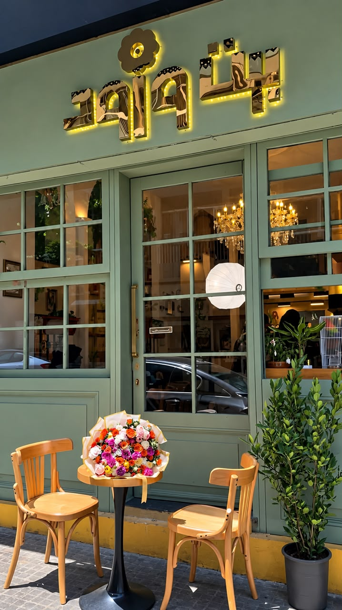
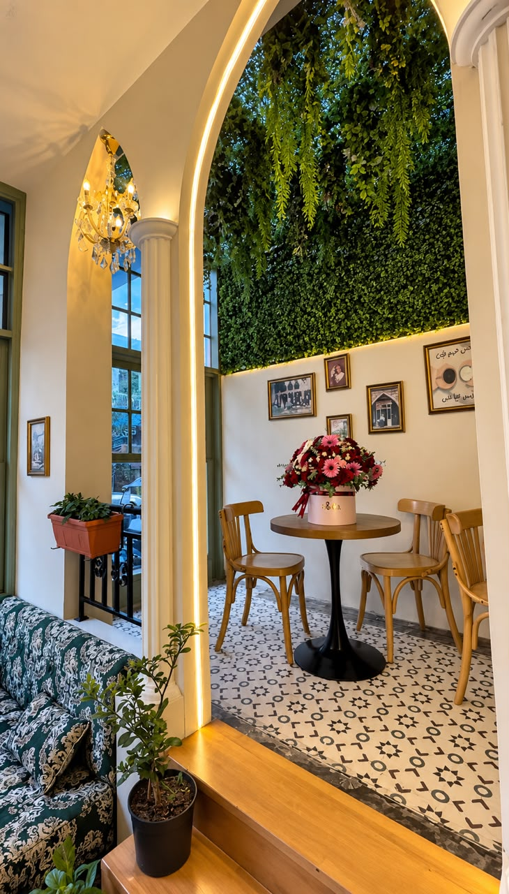
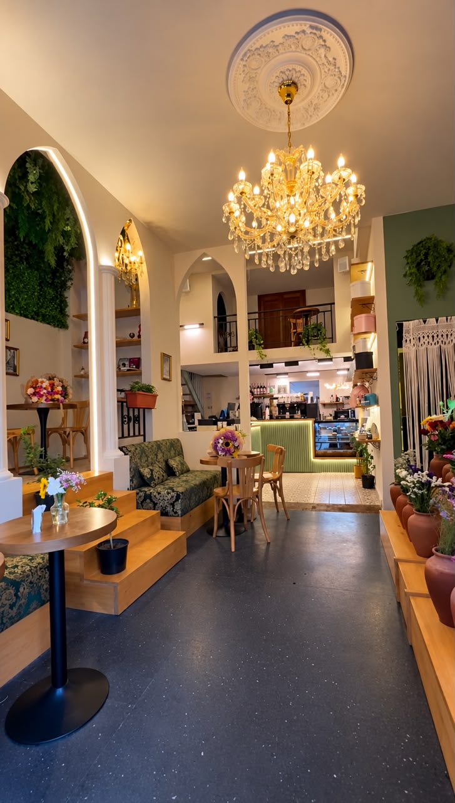
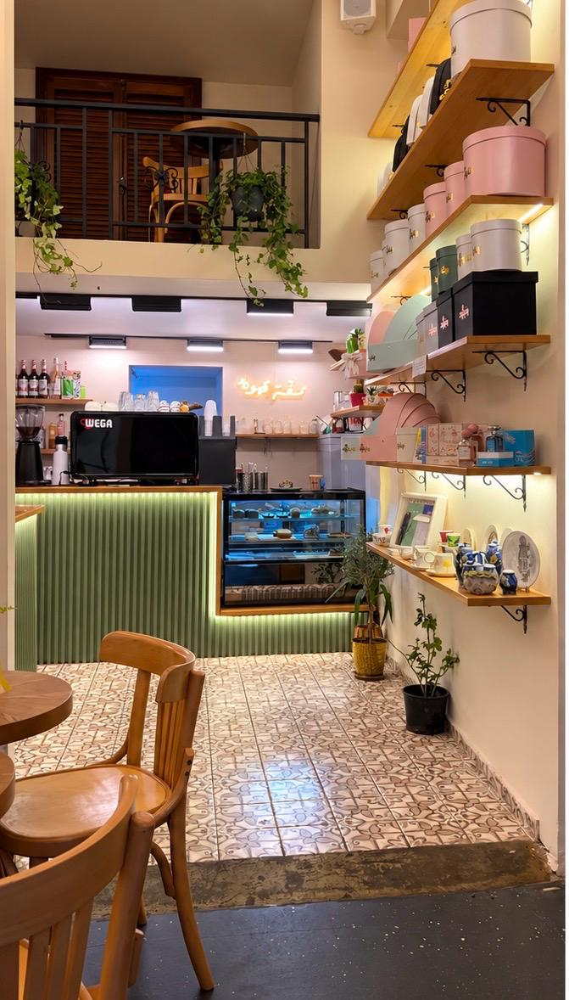
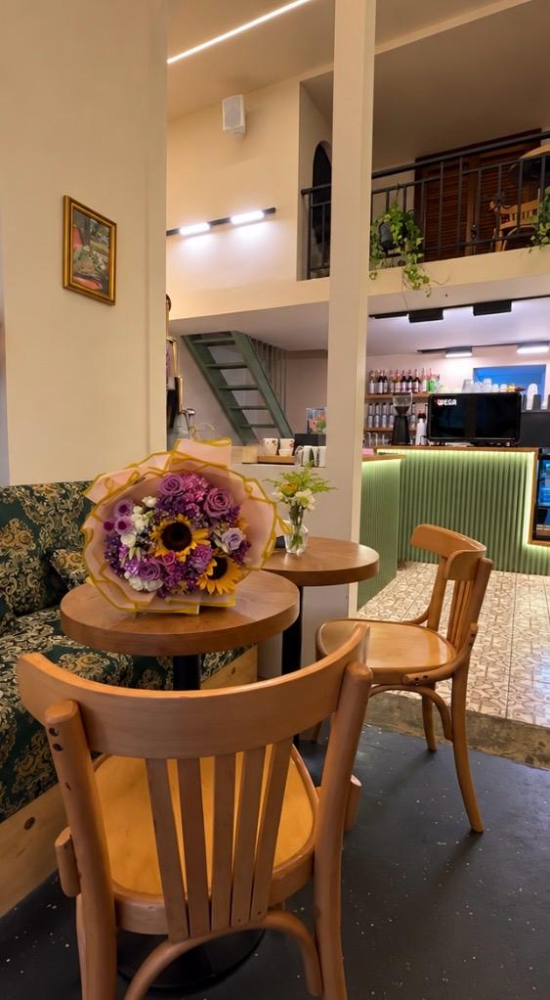

Signature Bouquet
Crimson Roses & Gypsophila
Velvety red roses paired with delicate baby's breath, wrapped in cream and gold-bordered paper with a satin and lace bow.
"Where Coffee Meets Flowers"
Step into a serene sanctuary of fresh botanical arrangements, handcrafted bouquets, artisan coffee, and warm hospitality designed for moments of beauty and relaxation.

From romantic crimson rose bouquets to serene hydrangea arrangements and bespoke floral styling, each creation is thoughtfully composed using fresh blooms.
Velvety red roses paired with delicate baby's breath, wrapped in cream and gold-bordered paper with a satin and lace bow.

Soft cream roses, lush blue hydrangeas, and fresh eucalyptus foliage arranged in layered sky-blue artisan wrapping.

Select your favorite stems directly from our tiered terracotta flower stand or request a custom arrangement tailored to your occasion.
Warm illuminated archways, crystal chandeliers, lush vertical greenery, and intimate wooden tables surrounded by fresh blooms. Click any photograph to view in full detail.




Beit Wurud is more than a flower boutique—it is a warm, welcoming haven where the aroma of freshly roasted espresso blends with the fragrance of fresh roses. Whether you are stopping by for a morning Cappuccino, our signature Beit Wurud Latte, a refreshing smoothie, or an afternoon dessert and sandwich, every detail is crafted for comfort.
Hot & iced specialty coffees, Beit Wurud Latte, Halawa Latte, Matcha, Frappes, Smoothies & Mango Rose Ice Tea.
Fresh croissants, cinnamon rolls, cheesecake, fondant, Halloumi Pesto, Caesar salad & Smokey Cheese Pasta.